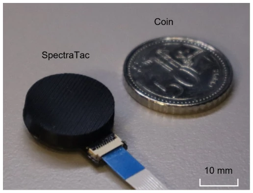
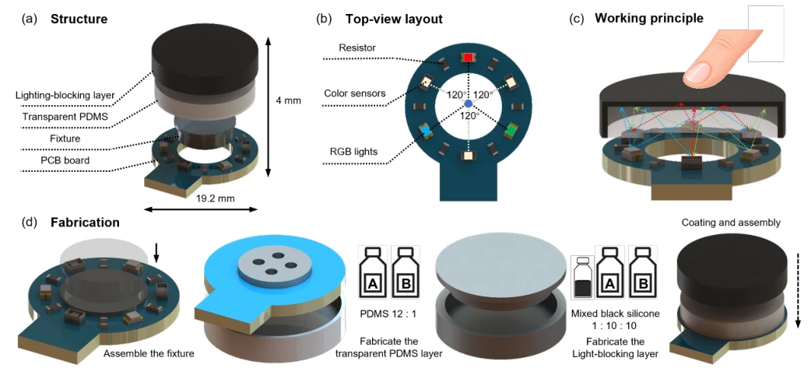
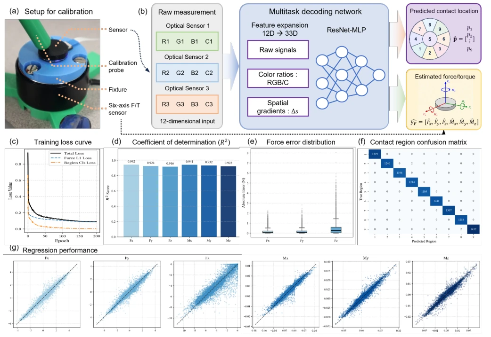
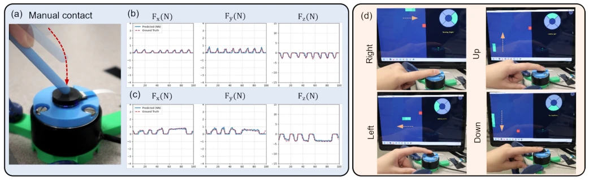

This SpectraTac introduces another 'cost-saving' solution to the tactile perception community. It claims to measure force without a camera, relying only on three color sensors plus RGB lights, truly saving compute and bandwidth, with material costs under $5. However, the trade-off is a resolution of only 9 regions, with force estimation accuracy around 0.4N; compared to high-definition imaging like GelSight [10], this is 'mosaic' level. However, for grasping or simple interactions not requiring fine textures, this 'good enough' approach is quite pragmatic. As for drawbacks, since there is no image, dynamic tactile such as slip detection probably relies on guessing, and the conclusion admits future improvements are needed. Overall, it is a good low-cost alternative, but do not expect it to replace high-end visual tactile, suitable for cost-sensitive scenarios.
Tactile perception is indispensable in robot interaction, but existing optical solutions like GelSight [10] and DIGIT [13] rely on cameras and imaging optics, resulting in large volume, high bandwidth, and heavy computation. Although camera-less solutions like optical waveguides [15] or fiber sensing [17] exist, they often sacrifice information density or structural complexity. This paper aims to resolve the contradiction between 'rich tactile information' and 'compact hardware, low cost, low computational overhead'. Existing solutions are either too expensive or large, or underutilize the spectral dimension. The authors point out that utilizing the spectral dimension (color) can increase information density without increasing size, but in fingertip-scale devices, active multi-color illumination combined with spatially distributed color receivers remains under-explored. Therefore, a compact architecture is needed that encodes both force and contact area, without requiring image processing.

Fig. 1. Prototype of the proposed compact camera-free optical tactile sensor.
方法Method
整体流程分为硬件采集、特征工程、多任务解码。硬件上，采用 19.2mm 直径的圆柱结构，内部集成 3 组 RGB LED 和 3 组 RGBC 传感器，呈 60 度交替分布，中间夹着 PDMS 透明层和黑色弹性层。接触导致 PDMS 形变，调制内部光场，改变颜色强度。信号层面，原始 12 维数据（3 传感器 x 4 通道）被扩展为 33 维特征，包括归一化色度比（解耦强度衰减）和传感器间差异（捕捉剪切力）。模型采用共享骨干的 ResMLP，分支为六轴力回归头和九区域分类头。训练时使用掩码多任务优化，处理部分未标注区域标签的数据。这种设计避免了图像采集，直接输出低维特征，通过数据驱动解码实现 3D 力和接触区域估计。
The overall process is divided into hardware acquisition, feature engineering, and multi-task decoding. In terms of hardware, a cylindrical structure with 19.2mm diameter is adopted, internally integrating 3 groups of RGB LEDs and 3 groups of RGBC sensors, distributed alternately at 60 degrees, sandwiching a PDMS transparent layer and a black elastic layer. Contact causes PDMS deformation, modulating the internal light field and changing color intensity. At the signal level, raw 12-dimensional data (3 sensors x 4 channels) is expanded to 33-dimensional features, including normalized chromaticity ratios (decoupling intensity attenuation) and inter-sensor differences (capturing shear force). The model adopts a ResMLP with a shared backbone, with branches for a six-axis force regression head and a nine-region classification head. Masked multi-task optimization is used during training to handle data with partially unlabeled region tags. This design avoids image acquisition, directly outputs low-dimensional features, and achieves 3D force and contact area estimation through data-driven decoding.

Fig. 2. Structure, working principle, and fabrication of the proposed camera-free optical tactile sensor. (a) Exploded view of the structural components. (b) Top view of the printed circuit board (PCB), showing the alternating arrangement of RGBC sensors and RGB LEDs. Components of the same type are spaced at 120◦intervals, whereas adjacent emitters and sensors are separated by 60◦. (c) Schematic of contact-induced modulation of internal light propagation. (d) Fabrication of the elastomeric layers and final assembly.
实验Experiments
实验部分构建了约 6 万样本的校准数据集，使用六轴力/力矩传感器作为真值。评测指标包括 3D 力估计的 MAE 和接触区域分类准确率。结果显示，Fx/Fy 轴 MAE 低于 0.2N，Fz 轴低于 0.5N，扭矩误差极小。九区域分类准确率达 99.9%，误分类主要发生在相邻区域。应用演示了实时力跟踪和基于接触区域的贪吃蛇游戏控制，验证了低延迟交互能力。消融实验未详细列出，但特征工程部分展示了色度比和差分特征对物理意义的保留。整体证明了分布式光电传感在紧凑场景下的可行性。
The experimental part constructed a calibration dataset of approximately 60,000 samples, using a six-axis force/torque sensor as ground truth. Evaluation metrics include MAE for 3D force estimation and contact area classification accuracy. Results show Fx/Fy axis MAE below 0.2N, Fz axis below 0.5N, torque error minimal. Nine-region classification accuracy reaches 99.9%, misclassification mainly occurs in adjacent regions. Applications demonstrated real-time force tracking and Snake game control based on contact area, verifying low-latency interaction capabilities. Ablation studies are not listed in detail, but the feature engineering section demonstrates the retention of physical meaning by chromaticity ratios and differential features. Overall, it proves the feasibility of distributed optoelectronic sensing in compact scenarios.

Fig. 3. Data acquisition, decoding framework, and experimental evaluation. (a) Calibration setup using a reference six-axis F/T sensor. (b) Multitask learning pipeline that expands 12-dimensional raw optical signals into 33-dimensional features for F/T estimation and contact-region classification. (c) Training loss curves. (d) Coefficient of determination (R2) for the six predicted mechanical components. (e) Absolute-error distributions for the 3D forces. (f) Confusion matrix for nine-region classification. (g) Predicted forces and torques versus their ground-truth values.

Fig. 4. Real-time force estimation and human–machine interaction. (a) Dynamic manual contact applied to the sensor. (b) Tracking of 3D forces (Fx, Fy, and Fz) during repeated short contacts. (c) Tracking of 3D forces during sustained loads of different durations. In (b) and (c), solid blue lines show the predictions, and dashed red lines show the ground truth. (d) Real-time control of a Snake game. The nine contact regions are mapped to directional commands (up, down, left, and right), with the central region serving as the neutral state.